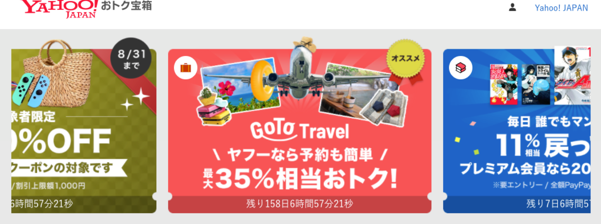
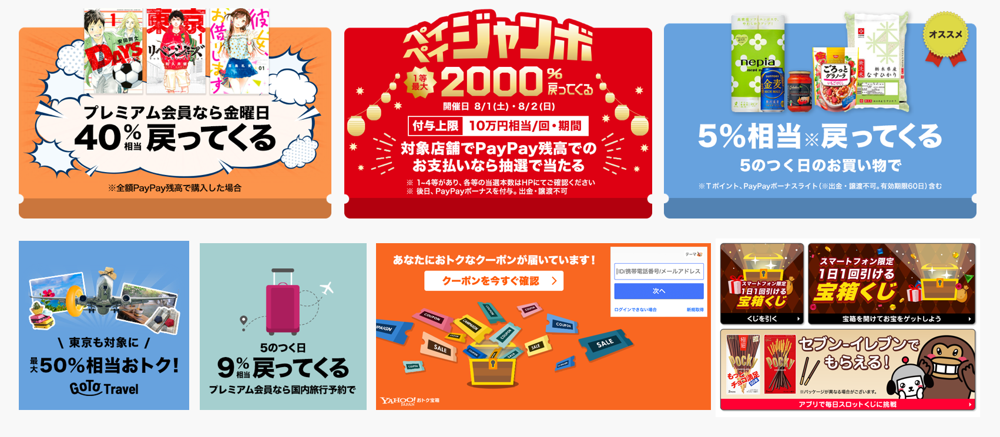
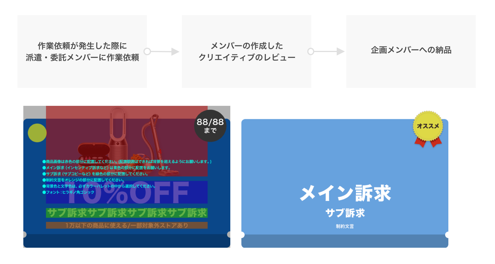

Yahoo!ショッピング、ヤフオク!、PayPayモール、PayPayフリマ、Yahoo!トラベル、LOHACO、ebookjapanなど、ヤフーのコマースサービスにおける各種クーポンを一案提供する新規サービス「Yahoo!宝箱」にて、掲載バナーの作成およびCTR改善、制作運用の体制構築を担当しました。
立ち上げ初期の直接制作から、運用期の外部パートナーを活用した効率化・品質管理体制への移行をスムーズに行いました。
サービス立ち上げに伴う多種多様なコマースサービスのバナーを制作し、リリーススピードに寄与。
通常制作を委託化しつつ、自身は数値成果に大きく直結する注力案件の分析・制作に特化。
運用に則したPSDテンプレートを作成し、担当者ごとの仕上がりや制作効率のばらつきを防止。
委託・派遣メンバーが作成したクリエイティブに対するレビュー体制を確立し、ブランド品質を維持。
運用フェーズ以降、自ら担当する案件はCTR・CVRの数値貢献が見込める注力案件に厳選。例えば「PayPayジャンボ」への誘導クリエイティブでは、通常の平均CTRが5〜10%のところ、デザイン工夫により **CTR 30%** を獲得する成果を上げました。

運用フェーズへの移行に伴い、作成業務の一部を委託・派遣メンバーへ展開。誰が担当しても即座に高精度な制作が行えるようPSDテンプレートを刷新し、クオリティチェックのためのレビューフローを確立しました。

高い訴求力を生み出すクリエイティブ制作の技術に加え、他メンバーへ業務展開するためのテンプレート化やレビュー体制の設計など、運用全体の仕組みづくり（オペレーションデザイン）の重要性を学びました。
プロダクトの規模拡大に合わせて、制作のスピード・クオリティ・スケール性を両立できるチーム設計を今後も意識していきます。